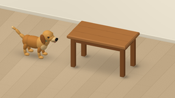
complete
dynamic_spatial_relationship_0000 ↗
1 保存候选 · 8955 输出 tokens
CODING AGENTS AS PIXEL WORLD MODELS
点击样本查看视频、逐轮候选和实际工具记录。

1 保存候选 · 8955 输出 tokens
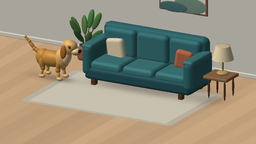
1 保存候选 · 8900 输出 tokens
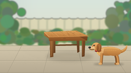
1 保存候选 · 6387 输出 tokens
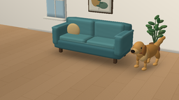
2 保存候选 · 8993 输出 tokens
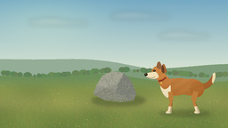
1 保存候选 · 6159 输出 tokens
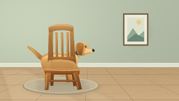
1 保存候选 · 6425 输出 tokens
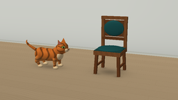
2 保存候选 · 8648 输出 tokens
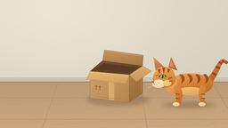
2 保存候选 · 6796 输出 tokens
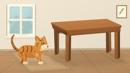
3 保存候选 · 8939 输出 tokens
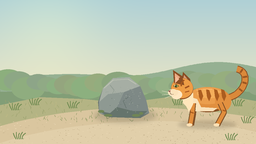
1 保存候选 · 4824 输出 tokens
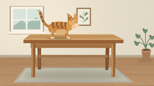
1 保存候选 · 6176 输出 tokens
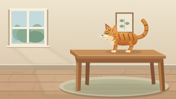
1 保存候选 · 6187 输出 tokens
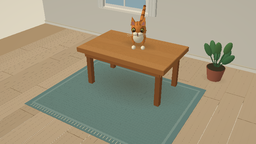
4 保存候选 · 10901 输出 tokens
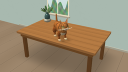
2 保存候选 · 8979 输出 tokens
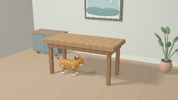
2 保存候选 · 10685 输出 tokens
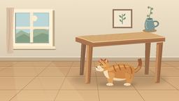
1 保存候选 · 7144 输出 tokens
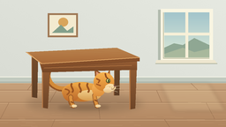
1 保存候选 · 5331 输出 tokens
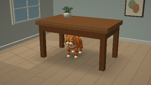
3 保存候选 · 8009 输出 tokens
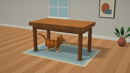
3 保存候选 · 14473 输出 tokens
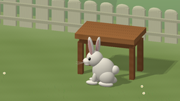
1 保存候选 · 7913 输出 tokens
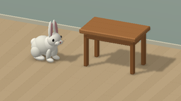
1 保存候选 · 7385 输出 tokens
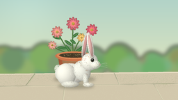
1 保存候选 · 5754 输出 tokens
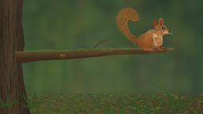
2 保存候选 · 8857 输出 tokens
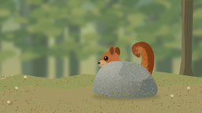
1 保存候选 · 5799 输出 tokens
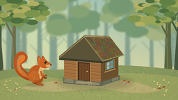
1 保存候选 · 8862 输出 tokens
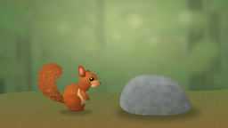
3 保存候选 · 7341 输出 tokens
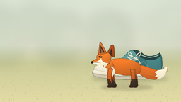
1 保存候选 · 6204 输出 tokens
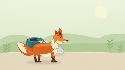
1 保存候选 · 5994 输出 tokens
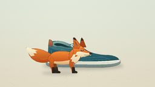
1 保存候选 · 7928 输出 tokens
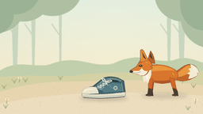
1 保存候选 · 6611 输出 tokens
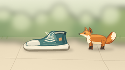
1 保存候选 · 6010 输出 tokens
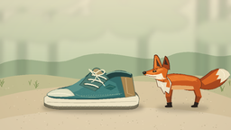
1 保存候选 · 7688 输出 tokens
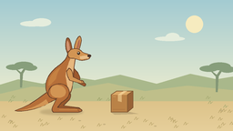
1 保存候选 · 5515 输出 tokens
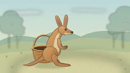
1 保存候选 · 7508 输出 tokens
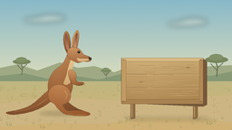
2 保存候选 · 7374 输出 tokens
2 保存候选 · 7243 输出 tokens
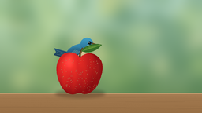
2 保存候选 · 5442 输出 tokens

3 保存候选 · 6001 输出 tokens
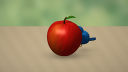
3 保存候选 · 9100 输出 tokens
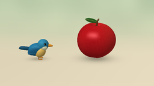
1 保存候选 · 6239 输出 tokens
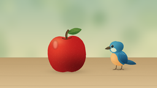
1 保存候选 · 4942 输出 tokens
1 保存候选 · 4877 输出 tokens
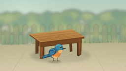
2 保存候选 · 6403 输出 tokens
1 保存候选 · 5657 输出 tokens
1 保存候选 · 4586 输出 tokens
1 保存候选 · 4686 输出 tokens
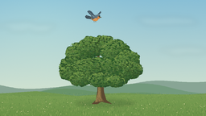
1 保存候选 · 5615 输出 tokens
1 保存候选 · 5408 输出 tokens
1 保存候选 · 4222 输出 tokens
1 保存候选 · 4221 输出 tokens
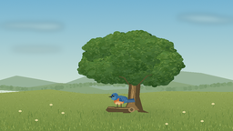
1 保存候选 · 5813 输出 tokens
1 保存候选 · 5459 输出 tokens
1 保存候选 · 5237 输出 tokens
2 保存候选 · 4680 输出 tokens
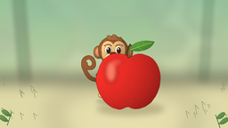
1 保存候选 · 7658 输出 tokens
1 保存候选 · 6048 输出 tokens
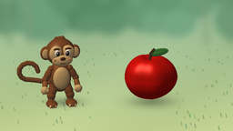
2 保存候选 · 9496 输出 tokens
1 保存候选 · 5451 输出 tokens
1 保存候选 · 7812 输出 tokens
2 保存候选 · 6840 输出 tokens
1 保存候选 · 5149 输出 tokens
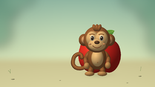
2 保存候选 · 7781 输出 tokens
3 保存候选 · 10331 输出 tokens
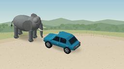
2 保存候选 · 13279 输出 tokens
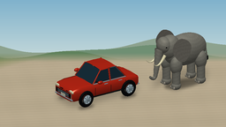
1 保存候选 · 10757 输出 tokens
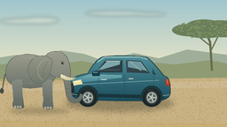
1 保存候选 · 8427 输出 tokens
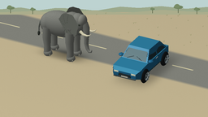
1 保存候选 · 10354 输出 tokens
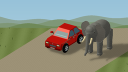
2 保存候选 · 14636 输出 tokens
4 保存候选 · 12843 输出 tokens
1 保存候选 · 6684 输出 tokens
1 保存候选 · 5471 输出 tokens
1 保存候选 · 5960 输出 tokens
2 保存候选 · 9100 输出 tokens
1 保存候选 · 6868 输出 tokens
2 保存候选 · 6612 输出 tokens
1 保存候选 · 7596 输出 tokens
1 保存候选 · 10508 输出 tokens
1 保存候选 · 6385 输出 tokens
2 保存候选 · 9467 输出 tokens
1 保存候选 · 9812 输出 tokens
1 保存候选 · 11783 输出 tokens
2 保存候选 · 8903 输出 tokens
2 保存候选 · 8421 输出 tokens
2 保存候选 · 9767 输出 tokens
2 保存候选 · 6552 输出 tokens
1 保存候选 · 6969 输出 tokens
2 保存候选 · 10188 输出 tokens
3 保存候选 · 7818 输出 tokens
3 保存候选 · 7243 输出 tokens
3 保存候选 · 8776 输出 tokens
3 保存候选 · 4555 输出 tokens
1 保存候选 · 6271 输出 tokens
1 保存候选 · 3066 输出 tokens
1 保存候选 · 3535 输出 tokens
1 保存候选 · 2930 输出 tokens
1 保存候选 · 4059 输出 tokens
2 保存候选 · 5695 输出 tokens
1 保存候选 · 12126 输出 tokens
3 保存候选 · 10238 输出 tokens
1 保存候选 · 7214 输出 tokens
2 保存候选 · 7944 输出 tokens
1 保存候选 · 7917 输出 tokens
1 保存候选 · 7092 输出 tokens
2 保存候选 · 15408 输出 tokens
3 保存候选 · 15937 输出 tokens
1 保存候选 · 3266 输出 tokens
1 保存候选 · 4695 输出 tokens
1 保存候选 · 4635 输出 tokens
3 保存候选 · 5500 输出 tokens
1 保存候选 · 7375 输出 tokens
1 保存候选 · 5859 输出 tokens
1 保存候选 · 4432 输出 tokens
1 保存候选 · 4924 输出 tokens
1 保存候选 · 3790 输出 tokens
1 保存候选 · 4443 输出 tokens
1 保存候选 · 5776 输出 tokens
1 保存候选 · 7365 输出 tokens
1 保存候选 · 6531 输出 tokens
1 保存候选 · 7462 输出 tokens
1 保存候选 · 5273 输出 tokens
1 保存候选 · 4466 输出 tokens
1 保存候选 · 6121 输出 tokens
1 保存候选 · 7397 输出 tokens
1 保存候选 · 6581 输出 tokens
1 保存候选 · 9277 输出 tokens
1 保存候选 · 5518 输出 tokens
2 保存候选 · 6221 输出 tokens
1 保存候选 · 5845 输出 tokens
1 保存候选 · 5583 输出 tokens
1 保存候选 · 4049 输出 tokens
3 保存候选 · 7807 输出 tokens
1 保存候选 · 4621 输出 tokens
1 保存候选 · 5742 输出 tokens
1 保存候选 · 4274 输出 tokens
1 保存候选 · 5016 输出 tokens
1 保存候选 · 4318 输出 tokens
2 保存候选 · 6607 输出 tokens
2 保存候选 · 6162 输出 tokens
1 保存候选 · 4643 输出 tokens
2 保存候选 · 7984 输出 tokens
4 保存候选 · 8521 输出 tokens
3 保存候选 · 9890 输出 tokens
2 保存候选 · 6323 输出 tokens
3 保存候选 · 12728 输出 tokens
3 保存候选 · 12895 输出 tokens
4 保存候选 · 12758 输出 tokens
3 保存候选 · 13415 输出 tokens
3 保存候选 · 16524 输出 tokens
3 保存候选 · 9758 输出 tokens
3 保存候选 · 14440 输出 tokens
2 保存候选 · 12141 输出 tokens
3 保存候选 · 7260 输出 tokens
2 保存候选 · 6120 输出 tokens
1 保存候选 · 7202 输出 tokens
2 保存候选 · 8735 输出 tokens
3 保存候选 · 6853 输出 tokens
3 保存候选 · 6805 输出 tokens
1 保存候选 · 6015 输出 tokens
2 保存候选 · 8635 输出 tokens
1 保存候选 · 6137 输出 tokens
2 保存候选 · 9420 输出 tokens
1 保存候选 · 5647 输出 tokens
2 保存候选 · 6829 输出 tokens
2 保存候选 · 5360 输出 tokens
4 保存候选 · 8482 输出 tokens
2 保存候选 · 11445 输出 tokens
4 保存候选 · 8671 输出 tokens
2 保存候选 · 9280 输出 tokens
2 保存候选 · 7801 输出 tokens
2 保存候选 · 10660 输出 tokens
1 保存候选 · 4419 输出 tokens
3 保存候选 · 9156 输出 tokens
2 保存候选 · 5491 输出 tokens
3 保存候选 · 9065 输出 tokens
3 保存候选 · 7358 输出 tokens
2 保存候选 · 10236 输出 tokens
3 保存候选 · 10198 输出 tokens
3 保存候选 · 11101 输出 tokens
2 保存候选 · 10594 输出 tokens
1 保存候选 · 12265 输出 tokens
2 保存候选 · 11664 输出 tokens
2 保存候选 · 10423 输出 tokens
2 保存候选 · 9724 输出 tokens
3 保存候选 · 8680 输出 tokens
2 保存候选 · 11784 输出 tokens
3 保存候选 · 9544 输出 tokens
2 保存候选 · 8448 输出 tokens
3 保存候选 · 6516 输出 tokens
2 保存候选 · 9073 输出 tokens
2 保存候选 · 6542 输出 tokens
2 保存候选 · 12749 输出 tokens
1 保存候选 · 7703 输出 tokens
2 保存候选 · 7123 输出 tokens
2 保存候选 · 10616 输出 tokens
2 保存候选 · 8802 输出 tokens
1 保存候选 · 8953 输出 tokens
1 保存候选 · 9693 输出 tokens
2 保存候选 · 6971 输出 tokens
1 保存候选 · 7933 输出 tokens
1 保存候选 · 8129 输出 tokens
1 保存候选 · 6320 输出 tokens
1 保存候选 · 10132 输出 tokens
2 保存候选 · 9191 输出 tokens
2 保存候选 · 8998 输出 tokens
3 保存候选 · 6854 输出 tokens
2 保存候选 · 11164 输出 tokens
1 保存候选 · 5226 输出 tokens
1 保存候选 · 8053 输出 tokens
2 保存候选 · 10915 输出 tokens
2 保存候选 · 7274 输出 tokens
2 保存候选 · 7869 输出 tokens
2 保存候选 · 9084 输出 tokens
1 保存候选 · 4823 输出 tokens
3 保存候选 · 8993 输出 tokens
1 保存候选 · 5545 输出 tokens
1 保存候选 · 6022 输出 tokens
1 保存候选 · 3769 输出 tokens
1 保存候选 · 4526 输出 tokens
1 保存候选 · 3430 输出 tokens
2 保存候选 · 9142 输出 tokens
1 保存候选 · 7955 输出 tokens
2 保存候选 · 10017 输出 tokens
2 保存候选 · 7396 输出 tokens
1 保存候选 · 7587 输出 tokens
2 保存候选 · 6841 输出 tokens
1 保存候选 · 4892 输出 tokens
1 保存候选 · 3705 输出 tokens
2 保存候选 · 4870 输出 tokens
2 保存候选 · 7336 输出 tokens
3 保存候选 · 3847 输出 tokens
3 保存候选 · 7739 输出 tokens
2 保存候选 · 9080 输出 tokens
1 保存候选 · 5399 输出 tokens
1 保存候选 · 10725 输出 tokens
2 保存候选 · 9101 输出 tokens
1 保存候选 · 8183 输出 tokens
1 保存候选 · 8001 输出 tokens
2 保存候选 · 6364 输出 tokens
1 保存候选 · 7752 输出 tokens
2 保存候选 · 11677 输出 tokens